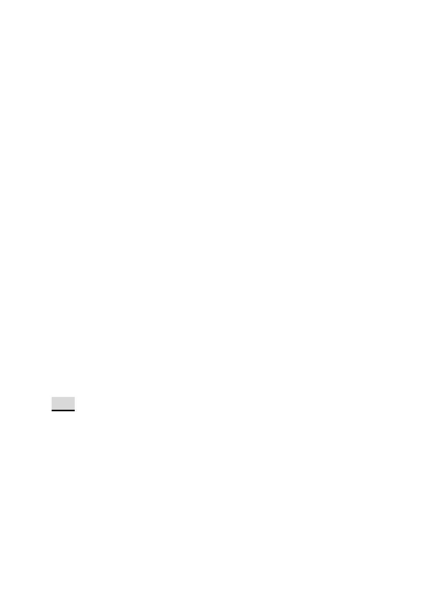

（二）土地使用分區管制
1. 使用強度：
土地使用及強度：第三種住宅區(特)及第三之一種住宅區
(特)悉依臺北市土地使用分區管制自治條例第三種住宅區
及第三之一種住宅區規定辦理。
2. 使用管制：
本計畫範圍之第三種住宅區（特）允許使用項目比照「臺
北市土地使用分區管制自治條例」之第三種住宅區使用組
別。
3. 本計畫區得適用101年11月27日公告之「修訂臺 北市老舊中
低層建築辦理都市更新擴大協助專案計畫」容積獎勵。本
計畫區總容積上限不得超過各該建築基地2 倍法定容積。
4. 本計畫區獎勵容積核給額度，依本市都市設計及土地開發
許可審議委員會及都市更新及爭議處理審議會審議結果
辦理。
五、 全案係市府103年4月23日府都規字第10331564403號函送到
會，並自103年4月24日起公開展覽30日。
六、 公民或團體所提意見：無。
七、 申請單位：臺北市都市更新處。
八、 辦理單位：臺北市政府。
九、 法令依據：都市計畫法第27條第l項第4款。
決議：本案除計畫書第16頁拾、計畫效益 四、在更新效益方面（一）
之文字，為避免日後都市更新事業執行之疑義，予以刪除
外，餘依市府公展計畫書、圖通過。
審議事項 三
案名：變更臺北市信義區祥和段三小段523地號等20筆土地第三種
住宅區為第三種住宅區（特）細部計畫案
案情概要說明：
第 - 16 - 頁，共 20 頁